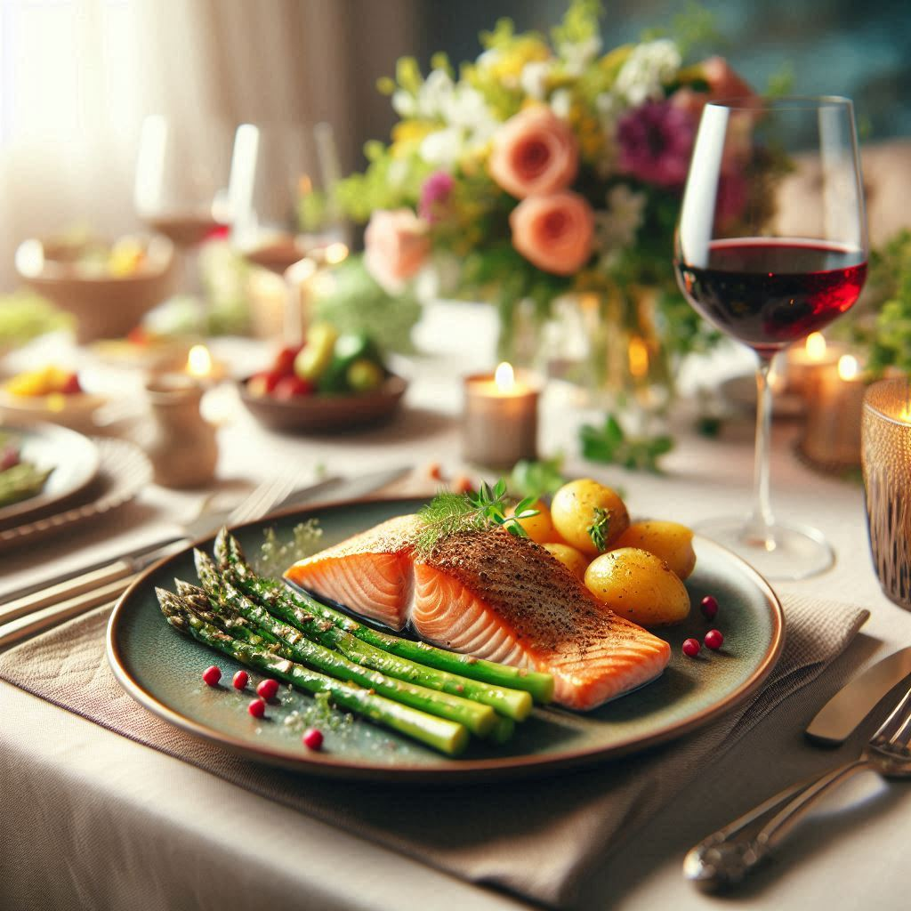

The hunger only God can satisfy.

Have you ever achieved something you worked hard for — a new job, a relationship, a goal — only to feel a strange emptiness afterward? That hollow feeling has a name. Theologians and philosophers have called it the "God-shaped hole." It is the void inside every human soul that was designed specifically to be filled by God alone. No amount of money, success, entertainment, or human connection can permanently satisfy it.
"As the deer pants for streams of water, so my soul pants for you, my God. My soul thirsts for God, for the living God."— Psalm 42:1-2
The Bible is "living and active" — not a dusty history book, but a living document that speaks directly to your situation, your pain, your questions, and your hopes. Just as your body needs food daily, your soul needs the Word of God regularly. Even a few verses each morning can reframe your entire day, shifting your perspective from anxiety to peace, from confusion to clarity.
You don't have to understand everything to open it. Just open it. God will find you right where you are, answer questions you haven't even voiced yet, and speak into your situation like nothing else can - because it is not just 'ink on paper'. It is the Living Voice of God.
Prayer is not a religious formality — it is a conversation with the living God. When you pray, you are not reciting words into empty space. You are communing with the One who created you, who knows your name, and who is genuinely interested in every detail of your life. Like sitting down to a good meal, prayer nourishes and restores; connecting us to the Living God, who redeems not only our life, but our soul.
Start with just 5 minutes in the Bible each morning
Talk to God honestly — He can handle your questions, your anger, and your pain. Opening a conversation with God will open a door to your healing.
Let praise shift your perspective and turn your eyes towards your God, who is your help.
Grow alongside others. Deep down, people are all the same, and at different stages of their journey; connecting to God in a personal way